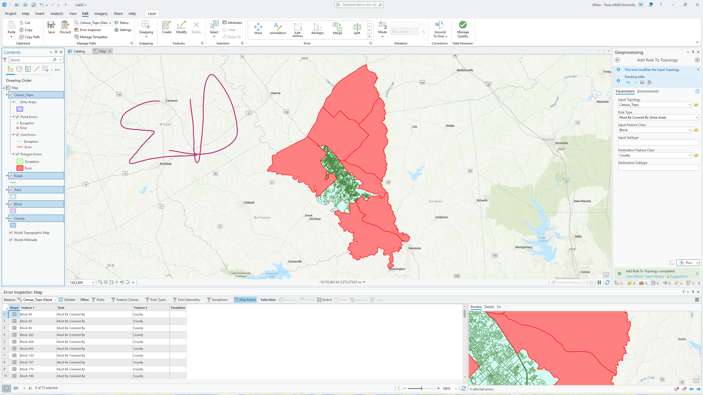
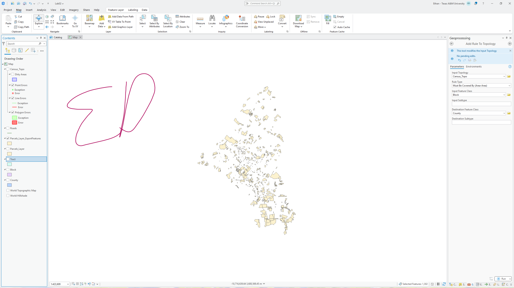
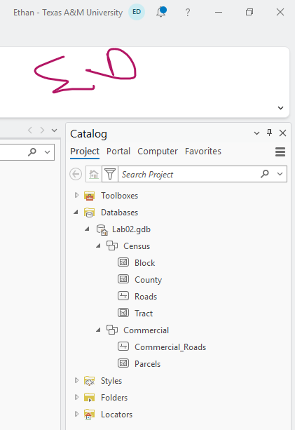

Course spatial layers
Census blocks, counties, roads and tracts alongside commercial roads and parcels.
GEOG 391 / Lab 2 / Fall 2026
I organized census and commercial feature datasets, inspected topological errors and exported parcels selected by their intersection with roads.



Census blocks, counties, roads and tracts alongside commercial roads and parcels.
Create a geodatabase structure, inspect invalid blocks and use an intersection-based selection.
A documented dataset hierarchy and an exported parcel selection.
The submission shows the lab geodatabase in ArcGIS Pro, a map/table view of topologically invalid census blocks and exported parcels that intersect roads. These are distinct tasks in organizing and checking spatial data.
The screenshots document a course exercise. They do not establish that every source geometry is valid or that intersecting a mapped road proves real-world access to a parcel. I would keep the selection rule, coordinate system and validation criteria with any reused output.